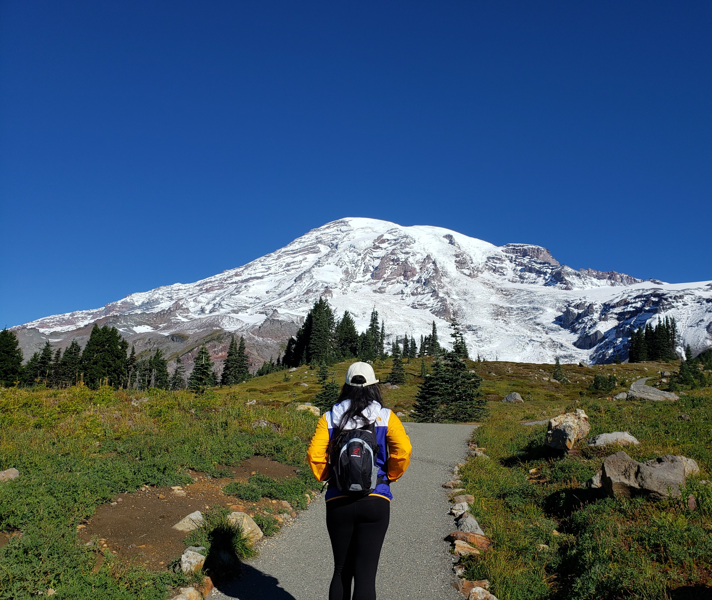
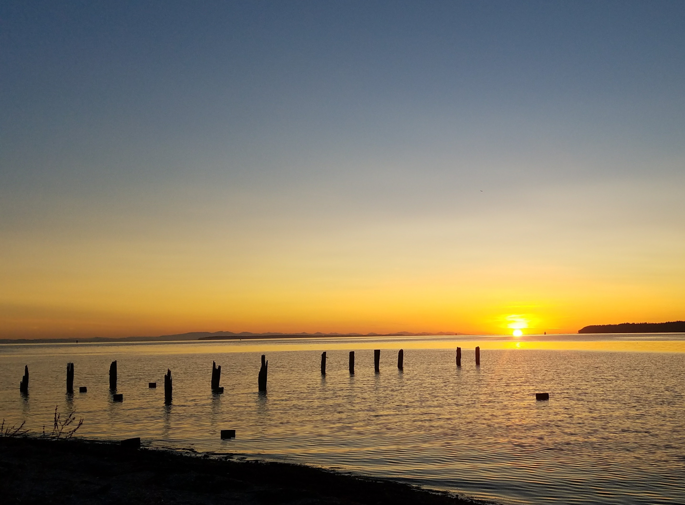

"The journey of a thousand miles begins with one step"
Classes I'm currently taking
- Web Development
- Project Management
Five of My Favorite Things
- Favorite animal: Dog
- Favorite food: Cakes
- Favorite drink: Coffee
- Favorite TV show: Crime Show
- Favorite hobby: Hiking 

Image Source: San Diego News. "International 85C Bakery Cafe Opens in Loma Square." San Diego News, October 4, 2024.

Image Source: CNN. "Coffee First Thing in the Morning." CNN, October 1, 2020.
By Transferred by Bloody-libu; originally uploaded by Xavax - Originally uploaded on Wikimedia Commons, Public Domain.
A picture that represents when I'm happy
Feeling Alive!
Photo taken by me.
A picture that represents when I'm sad
Feeling Blue!
Photo taken by me.